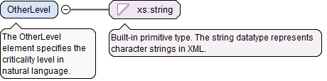
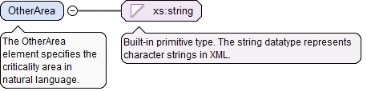

<xs:element name="LevelEnum" type="CriticalityLevelEnumType"><xs:annotation><xs:documentation>The LevelEnum element specifies an often-used criticality level.</xs:documentation></xs:annotation></xs:element>
The OtherLevel element specifies the criticality level in natural language.
Diagram

Type
xs:string
Properties
content
simple
Source
<xs:element name="OtherLevel" type="xs:string"><xs:annotation><xs:documentation>The OtherLevel element specifies the criticality level in natural language.</xs:documentation></xs:annotation></xs:element>
<xs:element name="AreaEnum" type="CriticalityAreaEnumType"><xs:annotation><xs:documentation>The AreaEnum element specifies an often-used criticality area.</xs:documentation></xs:annotation></xs:element>
The OtherArea element specifies the criticality area in natural language.
Diagram

Type
xs:string
Properties
content
simple
Source
<xs:element name="OtherArea" type="xs:string"><xs:annotation><xs:documentation>The OtherArea element specifies the criticality area in natural language.</xs:documentation></xs:annotation></xs:element>
<xs:complexType name="CriticalityType"><xs:annotation><xs:documentation>The CriticalityType defines a criticality level for a characteristic and optionally defines a criticality area.</xs:documentation></xs:annotation><xs:sequence><xs:choice><xs:annotation><xs:documentation>This compositor provides a choice between the criticality level as an enumeration of a common type and a user defined string that describes the criticality.</xs:documentation></xs:annotation><xs:element name="LevelEnum" type="CriticalityLevelEnumType"><xs:annotation><xs:documentation>The LevelEnum element specifies an often-used criticality level.</xs:documentation></xs:annotation></xs:element><xs:element name="OtherLevel" type="xs:string"><xs:annotation><xs:documentation>The OtherLevel element specifies the criticality level in natural language.</xs:documentation></xs:annotation></xs:element></xs:choice><xs:choice minOccurs="0"><xs:annotation><xs:documentation>This optional compositor refines the meaning of the criticality level by defining the area to which it applies.</xs:documentation></xs:annotation><xs:element name="AreaEnum" type="CriticalityAreaEnumType"><xs:annotation><xs:documentation>The AreaEnum element specifies an often-used criticality area.</xs:documentation></xs:annotation></xs:element><xs:element name="OtherArea" type="xs:string"><xs:annotation><xs:documentation>The OtherArea element specifies the criticality area in natural language.</xs:documentation></xs:annotation></xs:element></xs:choice></xs:sequence></xs:complexType>